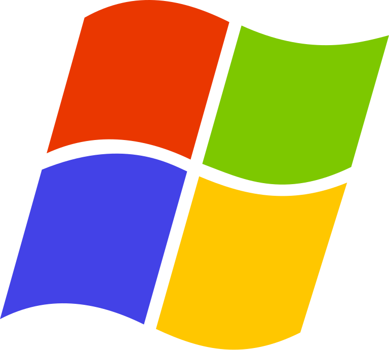
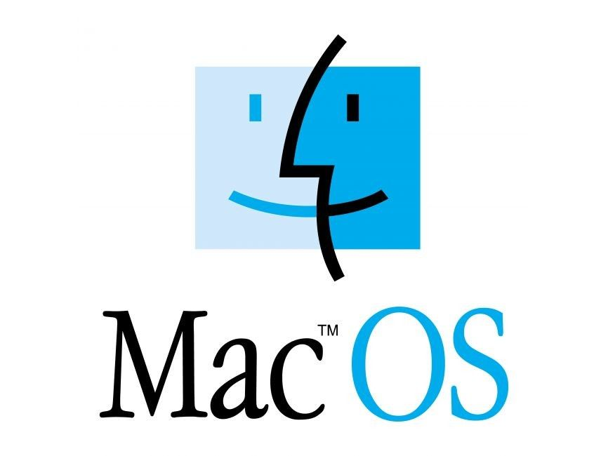
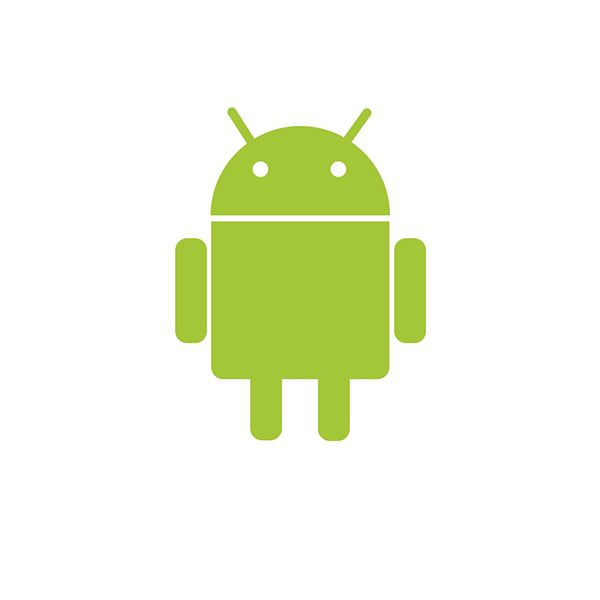
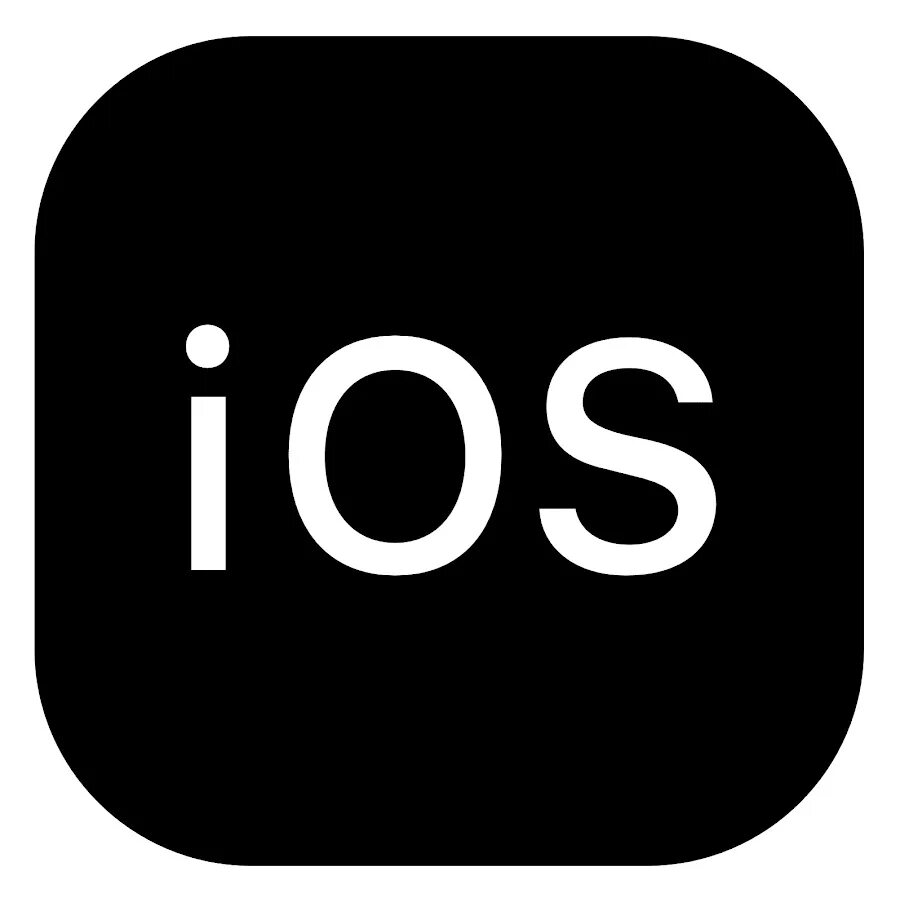
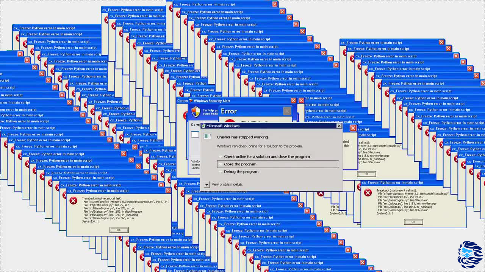
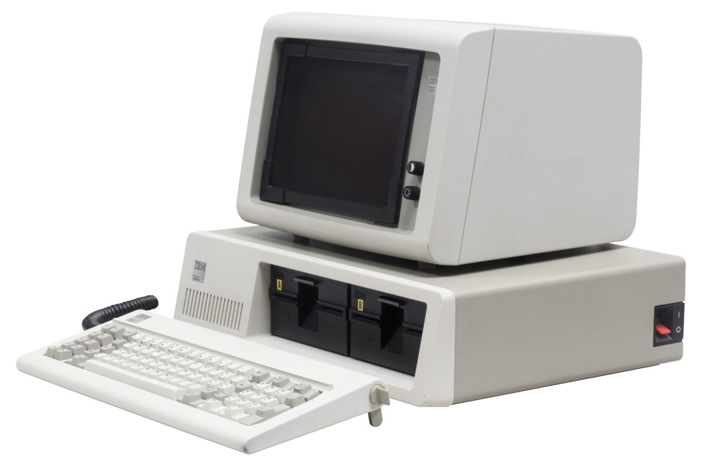

1 Операционная система (ОС, OS, operating system) — это набор программ, обеспечивающих работу компьютера или другого устройства и взаимодействие с ним пользователя.
2 Любые компьютеры, будь то ПК, ноутбуки, смартфоны или планшеты, состоят из двух групп компонентов:

Аппаратной части — процессора, оперативной памяти, клавиатуры, компьютерной мыши и так далее.
Программного обеспечения — системного и прикладного софта.
3 32-битные 64-битные комерческие свободно распространяемые серверные клиентские мобильные 
4 История операционных систем начинается в 1955 году, когда инженер General Motors Роберт Л. Патрик и программист North American Airlines Оуэн Мок разработали для IBM 704 GM-NAA I/O. Её иногда называли системой ввода — вывода.
В 1969 году в исследовательской лаборатории Bell Labs разработали ОС Unix. Она — основа современных операционных систем.
В 1973 году компания Xerox разработала первую операционную систему с графическим интерфейсом — Alto OS. В ней была реализована оконная система с различными типами элементов управления, такими как кнопки, поля ввода и списки.
В 1984 году компания Apple выпускает первую систему для своих Macintosh под названием System 1, созданную на основе Alto OS. С её помощью Стив Возняк планировал избавить пользователей от сложности существующих ОС и вывести компьютеры компании на массовый рынок.
В 1991 году в игру включается независимый разработчик Линус Торвальдс. На основе Unix он создаёт собственную операционную систему Linux и выкладывает её в открытый доступ.
Операционные системы для смартфонов развивались параллельно. С 1998 года разрабатывалась Symbian — ОС для Nokia, а с 1999 года — BlackBerry OS для BlackBerry от компании RIM.
Главным конкурентом iOS стала разработанная в 2008 году Android OS. Её выпустила компания Android Inc., которую позже приобрёл Google. Эта система также создана на ядре Linux, но распространяется с открытым исходным кодом.
Несколько дней назад в сеть просочился образ ранней версии Windows 11. Различные издательства провели тесты по производительности и пришли к неутешительному выводу: Windows 11 в среднем работает хуже, чем Windows 10. Но расстраиваться рано! Проблемы производительности могут быть связаны с «сыростью» слитого образа и нюансами совместимости с текущими программами.
Так или иначе, 24 июня состоится официальная презентация нового поколения операционных систем Windows, которая, возможно, даст ответы на многие вопросы. Если сегодня у вас есть настроение для ностальгии, предлагаем вам окунуться в мир Windows: познакомиться с историей, как менялась ось и что у нее внутри.
В начале 80 годов прошлого века компания IBM работала над персональным компьютером на базе процессора Intel 8088.
С середины 70 годов компания Microsoft была основным поставщиком Basic для восьмибитных микрокомпьютеров. Когда IBM обратилась к Microsoft для лицензирования Basic для их нового компьютера IBM PC, Microsoft согласилась, а также посоветовала обратиться к компании Digital Research для лицензирования операционной системы
Но, получилось так, что глава Digital Research не нашел в своем графике времени для встречи для IBM, и IBM снова обратилась к Microsoft, теперь уже с просьбой решить вопрос операционной системы для IBM PC. Microsoft купила клон ОС CP/M у компании Seattle Computer Products и перенесла её на IBM PC. Итоговым названием получившейся ОС стало MS-DOS 1.0.

5 Windows 
 macOs 
 Android 
 iOS 





